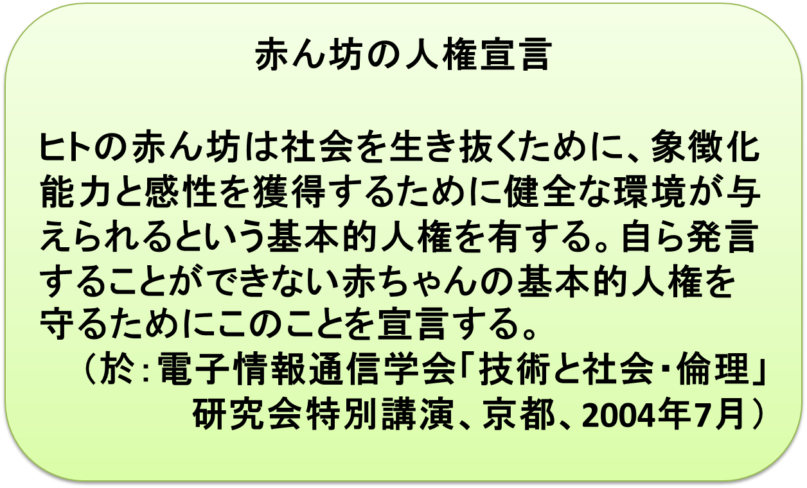
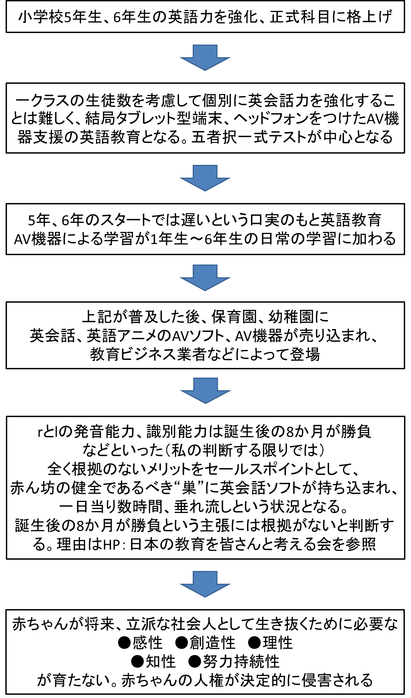
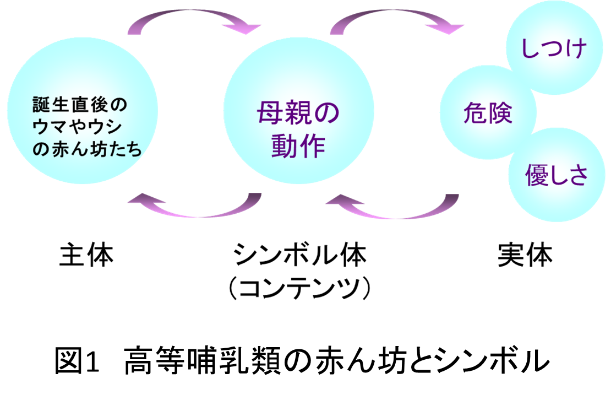
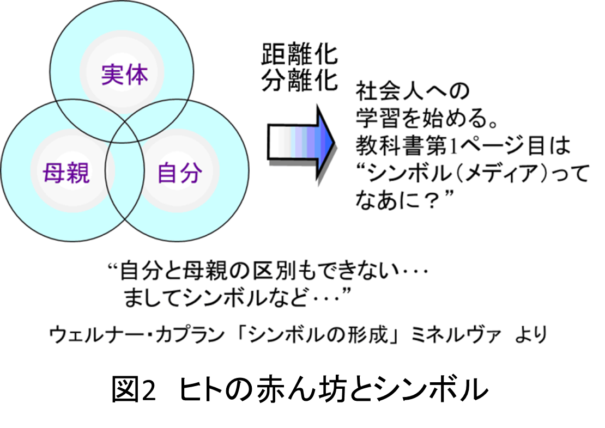
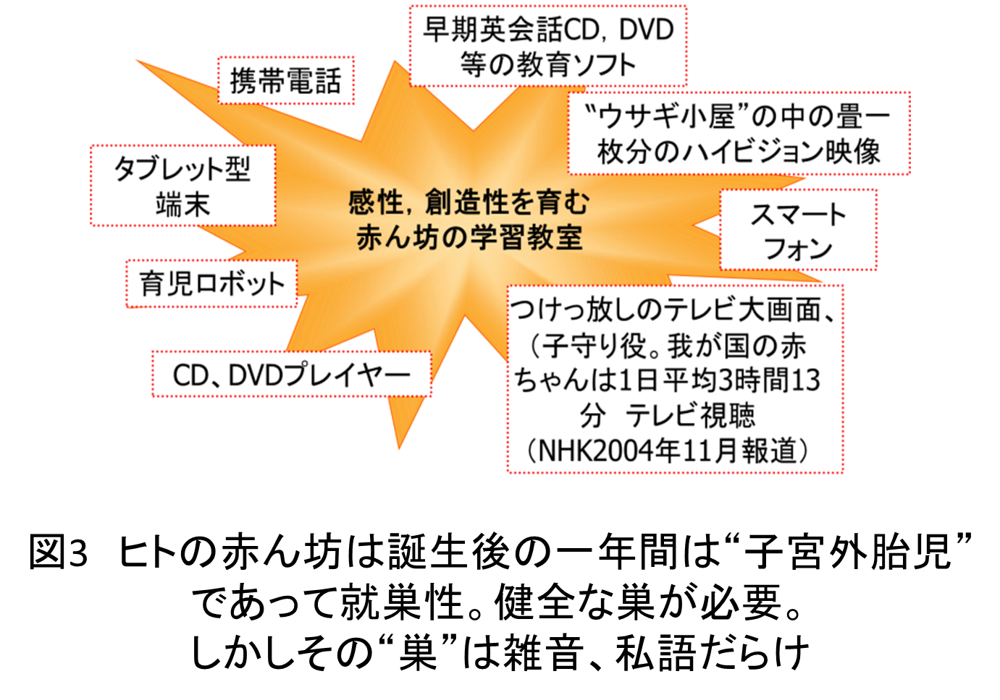

赤ちゃんが将来、立派な社会人として生き抜くために必要な能力が十分に与えられないまま育てられるという“人権侵害”の状況になっています。（全国全ての家庭でこうなっていると主張するものではありません。例外は多くあるでしょう）
しかし、私が実施した長期意見調査、アンケート等を踏まえた経験では半数以上の家庭で私の言う“人権侵害”の状況で赤ちゃんが育てられている、あるいは育てられざるを得ない状況にあると確信します）
非常に悲しむべきことに、全国の赤ちゃんの恐らくは半数以上が誤った（…というよりは人類500万年の子育て環境から著しく逸脱した）昨今のメディア環境、生活環境：
- ハイビジョン映像、大型スクリーン、テレビ、携帯、スマートフォン、iPad等のタブレット型端末等々の情報機器が、急速に、しかも沢山に赤ちゃんのまわりに存在するという昨今のメディア環境
- 夜8時以降も真昼のような明るさ、そして騒音を与える家庭内の生活環境
- テレビ、CD、DVD、（超早期教育が必要と主張する人達が売り込む）英会話ソフト（CD、DVD、タブレット端末）の音があふれる生活環境
にあります。
まさに、赤ちゃんが健全に育つべき環境が破壊されています（このことに気付く人が非常に少ないのです）。
この20年間（人類500万年の歴史から考えると非常に短い期間）に子育て環境は激変していることに気付いてほしいです。
国はこの事実をしっかり認識し、早急に改善を図ってほしいと願います。
上記のようなメディア環境、生活環境のもとで、現状では、多数のお母様方が、実質的に一人で子育てに励んでいらっしゃるという姿を国は直視し、早急に支援の手を差し伸べるよう全力で取り組んでいただきたいと懇願します。
国を挙げての誠心誠意での努力こそが、少子化対策の基本の基本でしょう。国運をかけての努力と言っても、決して過言ではないでしょう。赤ちゃんの人権問題、実質的に一人で子育てに励むお母様方のサポート問題。国は早急に対処して下さいますよう、衷心よりお願い致します。
非常に悲しむべきことに、この現状を訴えてみても殆どの人が“きょとん”とした顔をするか、あるいは、こんなことを訴えてみても
“現代社会、ネット環境に背を向ける老人”
“テレビや携帯、スマートフォン等を嫌っている一昔前の人間”
という反応が、返ってくるということです。私は“変わった人”として冷ややかな目で見られることが少なくないのです。
国もやはり同じように考えるのでしょうか。
―ヒトの赤ん坊は非常に特異な存在であることを
ご存知でしょうか―
- 500万年前、森から草原に進出した人類は直立二足歩行を開始。ヒトはホモ・サピエンス（かしこい人）への道を歩みはじめました
- その報いとして女性の産道が縮小、正常な赤ん坊を産むことが危険となりました
- 人類進化の過程で得た“早期出産”で、この問題を解決したものの、高等哺乳類の赤ん坊の中では特異な存在、唯一“子宮外胎児”と呼ばれる存在、すなわち下等哺乳類特有の“就巣性”動物に属するということになりました。
例えば下等哺乳類のドブネズミも、ヒトの赤ん坊と同じ、“就巣性”です - ヒトの赤ん坊以外の高等哺乳類の赤ん坊は、例外なく、全て“離巣性”です。因みに平均100グラム以下という、パンダの赤ちゃんも、立派な離巣性で巣は必要でありません
非常に注意すべきことは、赤ちゃんの脳は、誕生直後から、他の高等哺乳類の赤ちゃんとは比べものにならないほど活発に活動し、さまざまなやり方でまわりとのコミュニケーションに励んでいるということです。この赤ちゃんからのコミュニケーションへの働きかけに対し、お母様方の授乳の際などに見られるように、（ヒトの場合）他の動物に比べ、お母様のお顔が、赤ちゃんに対し最良の位置にあることを是非考えてみて下さい。
お母様方をはじめとする、まわりの人達とのコミュニケーションの世界がうまく作られることによって、赤ちゃんの脳は急速に発達し、他の高等哺乳類の赤ん坊では、到底、到達できない非常に高いレベルでの能力、すなわち理性、感性、創造性、努力持続性等々の社会人として生きていくための能力を身につけます。全てのヒトの赤ん坊はこの能力を授けられる権利があります。
この能力は、高等哺乳類の赤ん坊たちの中では、唯一の例外的存在であるヒトの赤ん坊に必須の巣が、“健全な巣”であることによってのみ育まれるのです。
このことを認識することこそが、子育ての基本の基本の基本の基本……。基本であることを何回繰り返しても足りないぐらい重要な“基本”なのです。
この赤ん坊の“巣”に、今、私の判断する限り、大きな大きな暗雲がひそかに忍び寄っています。
再度、私の判断する限りと断らせていただきますが、上記不適切なメディア環境、生活環境に加えて赤ちゃんの世界にさらに大きな暗雲が覆いかぶさろうとしています。
その暗雲は以下のような“危険”です。こういうシナリオで、将来赤ちゃんの人権が決定的に踏みにじられないよう、祈るのみです。
付録の図3に示した“巣”に、近い将来、必ず忍び寄るであろう大きな影の存在に、人々は気付くべきと強く、非常に強く確信します。その影とは、以下の出来事に端を発するであろう巨大な影のことです。
下記引用文章は、2013年1月電子情報通信学会から出版した拙著：
“21世紀コンテンツの時代を人は如何に生きるか”
に記述している文章を、ご参考までに示します。
|
2013年5月15日、教育再生実行会議は、 英語を小学校正式教科に格上げすることを提言
世界で活躍するグローバル人材の養成が謳われているが，筆者自身はこの提言，この目標に大きな疑問を感じている． |
私が非常に恐れるシナリオは、以下の通りです。

|
本年5月の教育再生実行会議提言がスタートラインとなってAV教育ソフト業者を巻き込んでの、英語力強化がいわば国家的スケールで、繰り広げられるでしょう。 英語という言葉は、前述のように、プラトンが生きた古代ギリシャの時代にもどって考えれば、“ロゴス（心）”であってListening、Speakingの部分は単なるテクネー（術）です。 将来、日本の若者が英米人そっくりのネイティブスピーカーとなったとしても、こういったAV教育ソフト業者を巻き込んでのテクネー（術）教育は言葉の真面目（しんめんもく）たる心、智性、感性を養う機会を大きく失わせ、英米人から全く相手にされない“人づくり”に終わるでしょう。 世界の国から相手にされない感性、理性的に全く魅力のない“人づくり”、和製の“米国人”をつくったに過ぎなかったということを、将来、必ず知ることとなるでしょう。 |
付録
ヒトの赤ん坊と高等哺乳類のヒトの赤ん坊の間には図1、図2に示したような決定的な差があります。図2に示したように、母親、自分、実体の区別すら出来ない赤ん坊は、図1に示すような形にしようと懸命の努力をします。いわゆる距離化、分極化の作業です。この赤ん坊の作業をまわりの人達も懸命に助けてあげることが必要なのです。


